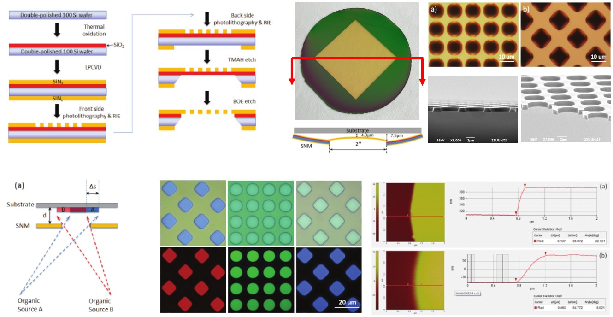

Sunbin Deng (邓孙斌，鄧孫斌)
Biography: I am presently a Postdoctoral Fellow under the supervision of Prof. Suman Datta at School of Electrical and Computer Engineering, Georgia Institute of Technology (GaTech). My current research is mainly on back-end-of-line (BEOL) compatible oxide ferroelectric field-effect transistors (FeFETs) for enabling advanced computing (e.g., in-memory computing, brain-inspired computing) hardware. I received my Ph.D. degree in Electronic and Computer Engineering from the Hong Kong University of Science and Technology (HKUST) under the supervision of Prof. Hoi-Sing Kwok in 2020. Afterwards, I have served as a postdoctoral research associate for 1.5 years, continuing my Ph.D. research on metal oxide thin-film electronics at State Key Laboratory of Advanced Displays and Optoelectronics Technologies (SKL of ADT), HKUST. Also, I worked with Prof. Ching Wan Tang and Prof. Shou-Cheng Dong to develop advanced silicon nitride shadow masks (SiNMs) for direct patterning of ultra-high-resolution RGB side-by-side OLED micro-displays. From Sept. 2021 to Aug. 2022, I was a postdoctoral researcher in cooperation with Prof. Shriram Ramanathan at Purdue University, West Lafayette., where I focused on strongly correlated oxide electronic/ionic devices and circuits for neuromorphic computing hardware. Before my Ph.D. study, I obtained my B.S. degree in Optical Information Science and Technology from Huazhong University of Science and Technology (HUST), Wuhan (advisor: Prof. Jun Zhou). I have co-authored >40 peer-reviewed papers, >20 conference proceeding articles, 1 book chapter, and 8 US/China patents. I was a recipient of Distinguished Paper Award at International Display Manufacturing Conference (IDMC) in 2015 and 2017, Best Presentation Award in Postgraduate Workshop on Display Research in 2016 and 2018. I also received the Distinguished Paper Award and was interviewed by the Young Engineers Spotlight (YES) at SID Display Week 2021. I was selected as an invited speaker of the 2021 Young Leader Conference at International Conference on Display Technology (ICDT), and is now a member of display future star committee of SID China.
Office: 4140 Marcus Nanotechnology Building, 345 Ferst Dr NW, Atlanta, GA 30318, USA Email: sdeng76@gatech.edu Tel: 1 (765) 746-9154
News
Education
- Postdoctoral Fellow at School of Electrical and Computer Engineering [09/2022 – present]
- Advisor: Prof. Suman Datta
- Research Direction: BEOL-compatible oxide (Fe)FETs for enabling advanced computing (e.g., in-memory computing, brain-inspired computing) hardware.
- Postdoctoral Research Fellow in the School of Material Engineering [09/2021 – 08/2022]
- Advisor: Prof. Shriram Ramanathan
- Research Direction: oxide electronic/ionic devices and circuits for neuromorphic computing.
- Postdoctoral Research Associate in the Department of Electronic and Computer Engineering [04/2020 – 08/2021]
- Advisors: Prof. Hoi-Sing Kwok and Prof. Ching Wan Tang
- Research area: (1) metal oxide thin-film electronics; (2) Silicon nitride shadow mask (SiNM) technology for ultra-high-resolution, RGB side-by-side OLED Displays.
- Ph.D. in electronic and computer engineering [09/2014 – 01/2020]
- Supervisors: Prof. Hoi-Sing Kwok and Prof. Man Wong
- Thesis: Hybrid-Phase Metal Oxide Thin-Film Transistors and their Applications [Thesis]
- B.Sc. in optical information science and technology [09/2010 – 06/2014]
- Advisor: Prof. Jun Zhou
- Final-year project: 氧化锌三维多孔纳米结构的制备及其光电特性研究 [Thesis]
Research
Metal-oxide (MO) semiconductors are expected to be one of the most promising thin-film transistor (TFT) channel materials. However, with the development of information displays and Internet of Things (IoT) technology, technical standards of MO TFTs become increasingly higher. The prevalent amorphous indium-gallium-zinc oxide (a-IGZO) devices always suffer from technical issues such as mobility inadequacy and device instability. Our efforts are being made on the continuing improvement of electrical characteristics and reliability of MO TFTs. Taking advantage of a collaborative modification on element composition and crystal morphology, we have developed hybrid-phase metal oxide (hp-MO) thin films, the electron Hall mobility of which (>30 cm2/Vs) could surpass the amorphous counterpart's theoretical upper limit, as more competitive MO TFT channels but without increasing material costs. Through processing innovations (e.g., gate insulator engineering, gate electrode engineering, and planarization-enable fluorination), a series of hp-MO TFTs including etch-stopper, self-aligned, and vertical devices can be fabricated with high electrical performance and robust device stability. These devices can further serve as cost-effective energy-efficient building blocks, participating in the demonstration of a wide range of electrical applications such as transparent electronics, micro-displays, augmented reality, and sensor interfaces.

An ideal display for virtual/augmented reality (VR/AR) with a truly immersive experience should at least have a 2-inch screen for accommodating a field of view (FoV) of 105°, and a pixel density of 2000 ppi for eliminating screen door effect. However, RGB side-by-side OLED displays that are currently used in most VR/AR headsets have pixel densities between 600 and 800 ppi due to the technical limitations of conventional fine metal masks (FMMs). On the other hand, white OLED micro-displays with a color conversion scheme are feasible to realize pixel densities exceeding 2000 ppi, but their panel size is typically limited to <1 inch by the CMOS backplanes, and the optical efficiency is greatly reduced by the color filter array. To address these issues, we have developed a process to produce a robust silicon nitride shadow mask (SiNM) for directly patterning ultra-high-resolution, RGB side-by-side OLED displays. So far, the ultra-flat self-tensioned SNMs with a max. diagonal size of 3 inch and a max. pixel density of 5000 ppi on 4-inch silicon wafers have been fabricated in high yield.
To be updated...
To be updated...
Publications
- Zhang M, Deng S, Yan Y, Wong M, Kwok HS. “Chapter 2: Fundamentals of Metal-Oxide Thin-Film Transistors”, in Semiconducting metal oxide thin-film transistors, IOP Publishing, 2020. [Book]
- Deng S*, Yu H*, Park TJ*, Islam ANMN, Manna S, Pofelski A, Wang Q, Zhu Y, Sankaranarayanan SKRS, Sengupta A, Ramanathan S. Submitted to Science Advances. (In revision)
- Park TJ*, Deng S*, Manna S, Islam ANMN, Yu H, Yuan Y, Fong D, Chubykin A, Sengupta A, Sankaranarayanan SKRS, Ramanathan S. Complex oxides for brain‐inspired computing: A review. Advanced Materials. 2022 Jun;2203352. [Paper]
- Deng S, Dong SC, Chen R, Zhong W, Li G, Zhang M, Yeung FS, Wong M, Kwok HS. A cost‐effective fluorination method for enhancing the performance of metal oxide thin‐film transistors. Journal of the Society for Information Display. 2021 May;29(5):318-27. [Paper] [Additional cover]
- Deng S, Zhong W, Dong S, Chen R, Li G, Zhang M, Yeung FS, Wong M, Kwok HS. Thermal Budget Reduction in Metal Oxide Thin-Film Transistors via Planarization Process. IEEE Electron Device Letters. 2021 Feb;42(2):180-3. [Paper]
- Yin X*, Deng S*, Li G, Zhong W, Chen R, Li G, Yeung FS, Wong M, Kwok HS. Low Leakage Current Vertical Thin-Film Transistors With InSnO-Stabilized ZnO Channel. IEEE Electron Device Letters. 2019 Dec;41(2):248-51. [Paper]
- Deng S, Chen R, Li G, Zhang M, Yeung FS, Wong M, Kwok HS. Gate Insulator engineering in top-gated indium-tin-oxide-stabilized ZnO thin-film transistors. IEEE Electron Device Letters. 2019 May;40(7):1104-7. [Paper]
- Xu Y*, Deng S*, Wu Z, Li B, Qin Y, Zhong W, Chen R, Li G, Wong M, Kwok HS. The implementation of fundamental digital circuits with ITO-stabilized ZnO TFTs for transparent electronics. IEEE Transactions on Electron Devices. 2018 Nov;65(12):5395-9. [Paper]
- Zhong W*, Deng S*, Wang K, Li G, Li G, Chen R, Kwok HS. Feasible route for a large area few-layer MoS2 with magnetron sputtering. Nanomaterials. 2018 Aug;8(8):590. [Paper]
- Deng S, Chen R, Li G, Zhang M, Xia Z, Wong M, Kwok HS. Threshold voltage adjustment in hybrid-microstructural ITO-stabilized ZnO TFTs via gate electrode engineering. IEEE Electron Device Letters. 2018 Jun;39(7):975-8. [Paper]
- Deng S, Chen R, Li G, Xia Z, Zhang M, Zhou W, Wong M, Kwok HS. Hybrid-Phase Microstructural ITO-Stabilized ZnO TFTs With Self-Aligned Coplanar Architecture. IEEE Electron Device Letters. 2017 Oct;38(12):1676-9. [Paper]
- Deng S, Chen R, Li G, Xia Z, Zhang M, Zhou W, Wong M, Kwok HS. Investigation of high-performance ITO-stabilized ZnO TFTs with hybrid-phase microstructural channels. IEEE Transactions on Electron Devices. 2017 Jun;64(8):3174-82. [Paper]
- Deng S, Chen R, Li G, Xia Z, Zhang M, Zhou W, Wong M, Kwok HS. High-performance staggered top-gate thin-film transistors with hybrid-phase microstructural ITO-stabilized ZnO channels. Applied Physics Letters. 2016 Oct;109(18):182105. [Paper]
- Deng S, Chen R, Zhou W, Ho JY, Wong M, Kwok HS. Fabrication of high-performance bridged-grain polycrystalline silicon TFTs by laser interference lithography. IEEE Transactions on Electron Devices. 2016 Feb;63(3):1085-90. [Paper]
- Li H, Deng S^, Xu Y, Zhong W, Luo D, Li G, Kwok HS, Chen R. A Differential Ring Oscillator with Tail Current Source Control Scheme Using N-Type Oxide TFTs. IEEE Transactions on Electron Devices. 2022 Mar;69(4):1870-5. [Paper]
- Xu Y, Wu Z, Li B, Deng S^, Zhong W, Li G, Luo D, Yeung FS, Kwok HS, Chen R. Oxide TFT Frontend Amplifiers for Flexible Sensing Systems. IEEE Transactions on Electron Devices. 2021 Dec;68(12):6190-6. [Paper]
- Xu Y, Zhong W, Li B, Deng S^, Fan H, Wu Z, Lu L, Yeung FS, Kwok HS, Chen R. An Integrator and Schmitt Trigger Based Voltage-to-Frequency Converter Using Unipolar Metal-Oxide Thin Film Transistors. IEEE Journal of the Electron Devices Society. 2020 Dec;9:144-50. [Paper]
- Fan H, Li G, Deng S^, Xu Y, Qin Y, Liu Y, Yeung SY, Wong M, Kwok HS, Chen R. A High Gain Low-Noise Amplifier Based on ITO-Stabilized ZnO Thin-Film Transistors. IEEE Transactions on Electron Devices. 2020 Oct;67(12):5537-43. [Paper]
- Xu Y, Li B, Deng S^, Qin Y, Fan H, Zhong W, Liu Y, Wu Z, Yeung FS, Wong M, Kwok HS. A novel envelope detector based on unipolar metal-oxide TFTs. IEEE Transactions on Circuits and Systems II: Express Briefs. 2020 Feb;67(11):2367-71. [Paper]
- Qin Y, Li G, Xu Y, Chen R, Deng S^, Zhong W, Wu Z, Li B, Li G, Yeung FS, Wong M. Low-power design for unipolar ITO-stabilized ZnO TFT RFID code generator using differential logic decoder. IEEE Transactions on Electron Devices. 2019 Oct;66(11):4768-73. [Paper]
- Chen Z, Zhang M, Deng S, Jiang Z, Yan Y, Han S, Zhou Y, Wong M, Kwok HS. Effect of Moisture Exchange Caused by Low-Temperature Annealing on Device Characteristics and Instability in InSnZnO Thin-Film Transistors. Advanced Materials Interfaces. 2022 May; 9(14):2102584. [Paper] [Inside back cover]
- Yan H, Huang J, Zhang X, Wang M, Liu J, Meng C, Deng S, Lu L, Xu P, Kwok HS, Li G. A buried functional layer for inorganic CsPb0.75Sn0.25I2Br perovskite solar cells. Solar RRL. 2022 Apr; 6(4):2100899. [Paper]
- Zhong W, Zhang J, Liu Y, Tan L, Lan L, Deng S, Yeung FS, Kwok HS, Chen R. Gate Dielectric Treated by Self-Assembled Monolayers (SAMs) to Enhance the Performance of InSnZnO Thin-Film Transistors. IEEE Transactions on Electron Devices. 2022 May; 69(5):2398-2403. [Paper]
- Shi W, Hu L, Liu Y, Deng S, Xu Y, Kwok HS, Chen R. Arithmetic and Logic Circuits Based on ITO-Stabilized ZnO TFT for Transparent Electronics. IEEE Transactions on Circuits and Systems I: Regular Papers. 2022 Jan;69(1):356-65. [Paper]
- Luo Z, Liu B, Luo X, Zheng T, Deng S, Chen R, Tian B, Xu P, Kwok HS, LI G. A Generic Protocol for Highly Reproducible Manufacturing of Efficient Perovskite Light-Emitting Diodes Using In-Situ Photoluminescence Monitoring. Advanced Materials Technologies. 2021 Oct;2100987. [Paper]
- Zhang J, Zhong W, Liu Y, Huang J, Deng S, Zhang M, Kwok HS, Li G. A High-Performance Photodetector Based on 1D Perovskite Radial Heterostructure. Advanced Optical Materials. 2020 Oct;2101504. [Paper]
- Luo X, Zheng T, Luo Z, Liu J, Deng S, Chen R, Zhang M, Kwok HS, Zhang J, LI G. Visual Electrocardiogram Synchronization Monitor Using Perovskite-Based Multicolor Light-Emitting Diodes. ACS Photonics. 2021 Sep;8(11):3337-45. [Paper]
- Zhong W, Kang L, Deng S, Lu L, Yao R, Lan L, Kwok HS, Chen R. Effect of Sc₂O₃ Passivation Layer on the Electrical Characteristics and Stability of InSnZnO Thin-Film Transistors. IEEE Transactions on Electron Devices. 2021 Aug;68(10):4956-61. [Paper]
- Yin X, Chen Y, Li G, Zhong W, Deng S, Lu L, Li G, Kwok HS, Chen R. Analysis of low frequency noise in in situ fluorine-doped ZnSnO thin-film transistors. AIP Advances. 2021 Apr;11(4):045326. [Paper]
- Xu Y, Li B, Zhong W, Deng S, Fan H, Wu Z, Yeung FS, Kwok HS, Chen R. A unipolar thin‐film transistor‐based amplifier with enhanced DC offset suppression. Electronics Letters. 2021 Jan;57(2):67-70. [Paper]
- Huang J, Yan H, Zhou D, Zhang J, Deng S, Xu P, Chen R, Kwok HS, Li G. Introducing Ion Migration and Light-Induced Secondary Ion Redistribution for Phase-Stable and High-Efficiency Inorganic Perovskite Solar Cells. ACS Applied Materials & Interfaces. 2020 Aug;12(36):40364-71. [Paper]
- Zhang M, Deng S, Zhou W, Yan Y, Wong M, Kwok HS. Reversely-Synchronized-Stress-Induced Degradation in Polycrystalline Silicon Thin-Film Transistors and Its Suppression by a Bridged-Grain Structure. IEEE Electron Device Letters. 2020 Jun;41(8):1213-6. [Paper]
- Liu Y, Huang YX, Deng S, Wong M, Kwok HS, Chen R. Dimension Scaling Effects on Conduction and Low Frequency Noise Characteristics of ITO-Stabilized ZnO Thin Film Transistors. IEEE Journal of the Electron Devices Society. 2020 Apr;8:435-41. [Paper]
- Zhang M, Lin H, Deng S, Chen R, Li G, Han ST, Zhou Y, Yan Y, Zhou W, Wong M, Kwok HS. High‐Performance Polycrystalline Silicon Thin‐Film Transistors without Source/Drain Doping by Utilizing Anisotropic Conductivity of Bridged‐Grain Lines. Advanced Electronic Materials. 2020 Feb;6(2):1900961. [Paper]
- Zhang J, Ren B, Deng S, Huang J, Jiang L, Zhou D, Zhang X, Zhang M, Chen R, Yeung F, Kwok HS. Voltage‐Dependent Multicolor Electroluminescent Device Based on Halide Perovskite and Chalcogenide Quantum‐Dots Emitters. Advanced Functional Materials. 2021 Dec;30(4):1907074. [Paper]
- Zhang M, Yan Y, Deng S, Zhou W, Yan Y, Wong M, Kwok HS. Degradation Induced by Forward Synchronized Stress in Poly-Si TFTs and Its Reduction by a Bridged-Grain Structure. IEEE Electron Device Letters. 2019 Jul;40(9):1467-70. [Paper]
- Weng S, Chen R, Zhong W, Deng S, Li G, Yeung FS, Lan L, Chen Z, Kwok HS. High-Performance Amorphous Zinc–Tin–Oxide Thin-Film Transistors With Low Tin Concentration. IEEE Journal of the Electron Devices Society. 2019 May;7:632-7. [Paper]
- Ren B, Yuen G, Deng S, Jiang L, Zhou D, Gu L, Xu P, Zhang M, Fan Z, Yueng FS, Chen R. Multifunctional optoelectronic device based on an asymmetric active layer structure. Advanced Functional Materials. 2019 Apr;29(17):1807894. [Paper] [Cover]
- Li G, Deng S, Zhang M, Chen R, Xu P, Wong M, Kwok HS. Achieving high open‐circuit voltage for p‐i‐n perovskite solar cells Via anode contact engineering. Solar Rrl. 2018 Oct;2(10):1800151. [Paper]
- Zhang M, Yan Y, Li G, Deng S, Zhou W, Chen R, Wong M, Kwok HS. OFF-state-stress-induced instability in switching polycrystalline silicon thin-film transistors and its improvement by a bridged-grain structure. IEEE Electron Device Letters. 2018 Sep;39(11):1684-7. [Paper]
- Chen R, Deng S, Liu Y, Liu Y, Li B, Wong M, Kwok HS. Investigation of top gate GaN thin-film transistor fabricated by DC magnetron sputtering. Journal of Vacuum Science & Technology B, Nanotechnology and Microelectronics: Materials, Processing, Measurement, and Phenomena. 2018 May;36(3):032203. [Paper]
- Chen R, Zhou W, Deng S, Zhang M, Wong M, Kwok HS. Passivation of Poly-Si Thin Film Employing Si Self-Implantation and Its Application to TFTs. IEEE Journal of the Electron Devices Society. 2018 Jan;6:240-4. [Paper]
- Liu Y, Deng S, Chen R, Li B, En YF, Chen Y. Low-frequency noise in hybrid-phase-microstructure ITO-stabilized ZnO thin-film transistors. IEEE Electron Device Letters. 2017 Dec;39(2):200-3. [Paper]
- Li G, Jiang Y, Deng S, Tam A, Xu P, Wong M, Kwok HS. Overcoming the limitations of sputtered nickel oxide for high‐efficiency and large‐area perovskite solar cells. Advanced Science. 2017 Dec;4(12):1700463. [Paper]
- Xia Z, Lu L, Li J, Feng Z, Deng S, Wang S, Kwok HS, Wong M. Characteristics of elevated-metal metal-oxide thin-film transistors based on indium-tin-zinc oxide. IEEE Electron Device Letters. 2017 May;38(7):894-7. [Paper]
- Cao Y, Deng S, Hu Q, Zhong Q, Luo QP, Yuan L, Zhou J. Three-dimensional ZnO porous films for self-cleaning ultraviolet photodetectors. RSC advances. 2015 Oct;5(104):85969-73. [Paper]
- Deng S, Zhong W, Chen R, Dong SC, Li G, Zhang M, Yeung FS, Wong M, Kwok HS. Fluorinated Metal Oxide Thin-Film Transistors with Low Process Thermal Budgets. In SID Symposium Digest of Technical Papers, Nanjing, China, 2023 Mar. (Invited)
- Yu H, Deng S, Park TJ, Wang Q, Mondal S, Ramanathan S. VO2 Insulator-Metal Phase Change Based Neuromorphic Materials and Devices. In Proceedings of 2022 MRS Fall Meeting & Exhibit, Boston, MA, USA, 2022 Nov.
- Dong SC, Deng S, Yang J, Jiang Y, Tang CW. 34.4: 3‐inch, 3000‐ppi Silicon Nitride Masks for Direct Patterning of OLED Microdisplays. In SID Symposium Digest of Technical Papers, Fuzhou, China, 2022 Oct. [Paper]
- Xu Y, Li B, Deng S, Zhong W, Yin X, Wu Z, Kwok HS, Chen R. P‐1.16: Frontend Amplifier with Unipolar Oxide TFTs for Heart Rate Measurements. In SID Symposium Digest of Technical Papers, Fuzhou, China, 2022 Oct. [Paper]
- Deng S, Park TJ, Wang Q, Yu H, Ramanathan S. Hydrogenated VO2 Switches for Neuromorphic Functions. In Proceedings of 23rd International Conference on Solid State Ionics (SSI-23), Boston, MA, USA, 2022 Jul.
- Deng S, Chen R, Xu Y, Zhong W, Dong SC, Li G, Zhang M, Yeung FS, Wong M, Kwok HS. All-Oxide Thin-Film Transistors for Low-Voltage-Operation Circuits. In SID Symposium Digest of Technical Papers, Beijing, China, 2021 Jun. [Paper]
- Deng S, Zhong W, Dong SC, Chen R, Li G, Zhang M, Yeung FS, Wong M, Kwok HS. A Cost-Effective Fluorination Method for Enhancing the Performance of Metal Oxide Thin-Film Transistors Using a Fluorinated Planarization Layer. In SID Symposium Digest of Technical Papers, virtual conference, 2021 May. (Distinguished Paper Award) [Paper] [Slides]
- Zhang M, Ma X, Jiang Z, Deng S, Li G, Chen R, Yan Y, Wong M, Kwok HS. Light-Illumination-Induced Degradation and Its Long-Term Recovery in Indium-Tin-Zinc Oxide Thin-Film Transistors. In Proceedings of 2019 IEEE 26th International Symposium on Physical and Failure Analysis of Integrated Circuits (IPFA), Hangzhou, China, 2019 Jul (pp. 1-3). [Paper]
- Ma X, Zhang M, Jiang Z, Deng S, Yan Y, Li G, Chen R, Wong M, Kwok HS. Output Breakdown Characteristics and the Related Degradation Behaviors in Metal Oxide Thin Film Transistors. In Proceedings of 2019 IEEE 26th International Symposium on Physical and Failure Analysis of Integrated Circuits (IPFA), Hangzhou, China, 2019 Jul (pp. 1-3). [Paper]
- Jiang Z, Zhang M, Ma X, Yan Y, Li G, Deng S, Zhou W, Chen R, Wong M, Kwok HS. Effect of Active Layer Thickness on Device Performance and Hot Carrier Instability in Metal Induced Crystallized Polycrystalline Silicon Thin-Film Transistors. In Proceedings of 2019 IEEE 26th International Symposium on Physical and Failure Analysis of Integrated Circuits (IPFA), Hangzhou, China, 2019 Jul (pp. 1-4). [Paper]
- Deng S, Chen R, Li G, Zhang M, Yeung FS, Wong M, Kwok HS. P‐16: Stacked PECVD SiO2 Gate Insulators for Top‐Gate Metal Oxide Thin‐Film Transistors in Enhancement Operation Mode. In SID Symposium Digest of Technical Papers, San Jose, USA, 2019 Jun (Vol. 50, No. 1, pp. 1271-1274). [Paper]
- Zhang M, Jiang Z, Deng S, Ma X, Yan Y, Li G, Chen R, Wong M, Kwok HS. P‐15: Gate‐Bias‐Stress‐Induced Instability in Hybrid‐Phase Microstructural ITO‐Stabilized ZnO TFTs. In SID Symposium Digest of Technical Papers, San Jose, USA, 2019 Jun (Vol. 50, No. 1, pp. 1267-1270). [Paper]
- Deng S, Chen R, Li G, Zhang M, Yeung FS, Wong M, Kwok HS. Gate Insulator Engineering in Top-Gated ITO-Stabilized ZnO TFTs. In Proceedings of 2018 Postgraduate Workshop on Display Research, Hong Kong, 2018 Dec (pp. 1-3). (Best Poster Presentation Award) [Paper]
- Zhang M, Yan Y, Zhou W, Chen R, Deng S, Wong M, Kwok HS. Degradation Behaviors of Driving Thin-Film Transistors in Active-Matrix Organic Light-Emitting Diode Displays. In Proceedings of 2018 IEEE International Conference on Electron Devices and Solid State Circuits (EDSSC), Shenzhen, China, 2018 Jun (pp. 1-3). [Paper]
- Zhang M, Yan Y, Zhou W, Chen R, Deng S, Wong M, Kwok HS. Yin X, Deng S, Li G, Zhong W, Chen R, Wong M, Kwok HS. Vertical Channel ITO-stabilized ZnO Thin-Film Transistors. In Proceedings of 2018 IEEE International Conference on Electron Devices and Solid State Circuits (EDSSC), Shenzhen, China, 2018 Jun (pp. 1-3). [Paper]
- Deng S, Chen R, Li G, Zhang M, Xia Z, Wong M, Kwok HS. P‐20: Towards High‐Performance and Cost‐Effective Top‐Gated Oxide TFTs with Hybrid‐Phase Microstructural Channels. In SID Symposium Digest of Technical Papers, Los Angeles, 2018 May (Vol. 49, No. 1, pp. 1252-1255). [Paper]
- Zhang M, Yan Y, Deng S, Zhou W, Chen R, Wong M, Kwok HS. P‐1.9: Characterization of Self‐Aligned Top‐Gate Microcrystalline Silicon Thin Film Transistors. In SID Symposium Digest of Technical Papers, Guangzhou, China, 2018 Apr (Vol. 49, pp. 544-546). [Paper]
- Zhong W, Li G, Deng S, Yin X, Lan L, Chen R, Kwok HS. P‐1.2: Photoluminescence and Electrical Properties study of ITO‐stabilized ZnO Thin‐Film Transistors with different annealing temperatures. In SID Symposium Digest of Technical Papers, Guangzhou, China, 2018 Apr (Vol. 49, pp. 520-523). [Paper]
- Xu Y, Wu Z, Deng S, Qin Y, Zhong W, Chen R, Li B, Wong M, Kwok HS. 30.1: Transparent Basic Logic Circuits with ITO‐Stabilized ZnO Thin Film Transistors. In SID Symposium Digest of Technical Papers, Guangzhou, China, 2018 Apr (Vol. 49, pp. 322-325). [Paper]
- Deng S, Chen R, Li G, Zhang M, Zhou Z, Xia Z, Wong M, Kwok HS. Back-Channel-Etched Oxide TFTs with Hybrid-Phase Microstructural ITO-Stabilized ZnO Channels. In Proceeding of 2018 International Conference on Display Technology (ICDT), Guangzhou, China, 2018 Apr (pp. 1-4). [Paper]
- Deng S, Chen R, Li G, Xia Z, Zhang M, Zhou W, Wong M, Kwok HS. A Study on Hybrid-Phase Microstructural ITO-Stabilized ZnO TFTs with Different Gate Insulators and Electrodes. In Proceedings of EuroDisplay 2017, Berlin, Germany, 2017 Nov.
- Zhong W, Li G, Chen R, Lan L, Zhang X, Pei W, Chen H, Deng S. A study on the bottom-gate ITO-stabilized ZnO thin-film transistors. In Proceedings of 2017 International Conference on Electron Devices and Solid-State Circuits (EDSSC), Hsingchu, Taiwan, 2017 Oct (pp. 1-4). [Paper]
- Deng S, Chen R, Li G, Xia Z, Zhang M, Zhou W, Wong M, Kwok HS. Self-Aligned Hybrid-Phase Micro-Structural ITO-Stabilized ZnO TFTs Achieved via a Combination of PECVD Processes. In Proceedings of the International Display Manufacturing Conference (IDMC), Hsingchu, Taiwan, 2017 Sep (pp. 1-4). (Distinguished Poster Award) [Paper]
- Deng S, Chen R, Li G, Xia Z, Wang K, Zhang M, Zhou W, Wong M, Kwok HS. Achievement of High-Performance and Environmentally Stable TFTs by Introducing Hybrid-Phase Microstructure into InSnZnO Channels. In Proceeding of 23rd International Display Workshops in conjunction with Asia Display, Fukuoka, Japan, 2016 Dec (p. 260-263). [Paper]
- Deng S, Chen R, Li G, Xia Z, Zhang M, Zhou W, Wong M, Kwok HS. Hybrid-Phase Microstructure in ITO-stabilized ZnO Thin Films and Its Application to High-Performance Thin-film Transistors. In Proceedings of 2016 Postgraduate Workshop on Display Research, Guangzhou, China, 2016 Sep (pp. 1-3). (Best Oral Presentation Award) [Paper]
- Deng S, Chen R, Zhou W, Zhang M, Xia Z, Deng S, Wong M, Kwok HS. Fabrication of High-Performance Bridged-Grain Polycrystalline Silicon Thin-Film Transistors with Laser Interference Lithography Technology. In Proceedings of the International Display Manufacturing Conference and International Conference on 3D Systems & Application (IDMC&3DSA), Taipei, Taiwan, 2015 Aug (pp. 1-4). (Distinguished Paper Award) [Paper]
- Chen R, Zhou W, Deng S, Ho JY, Wong M, Kwok HS. Bridge-Grain Metal Induced Crystallization Poly-Si TFTs with Silicon Self-Implantation. In Proceedings of the International Display Manufacturing Conference and International Conference on 3D Systems & Application (IDMC&3DSA), Taipei, Taiwan, 2015 Aug (pp. 1-4). [Paper]
- Chen R, Deng S, Kwok H. Method for Manufacturing a Top-Gate Self-Aligned Indium-Tin-Zinc Oxide Thin-Film Transistor. United States Patent 11,049,881. 2021 Jun 29. [Patent]
- 陈荣盛, 邓孙斌, 郭海成. 一种自对准顶栅铟锡锌氧化物薄膜晶体管及其制造方法. Chinese patent ZL 2017 1 0792095.9. 2020 Oct 11. [Patent]
- 陈荣盛, 邓孙斌, 郭海成. 一种二硫化钼薄膜的制备方法. Chinese patent ZL 2019 1 0049361.8. 2020 Aug 28. [Patent]
- Chen R, Deng S, Kwok H. Inorganic Metallic Oxide Thin Film with Composite Crystal Form and Manufacturing Method Thereof. United States patent application US 16/758,678. 2020 Apr 23. [Patent]
- 陈荣盛, 尹雪梅, 李国元, 邓孙斌, 郭海成. 垂直结构的复合晶型金属氧化物薄膜晶体管及其制造方法. Chinese patent application 2019 1 0975945.8. 2019 Oct 15. [Patent]
- 陈荣盛, 钟伟, 邓孙斌, 尹雪梅, 郭海成. 一种金属氧化物薄膜晶体管及其钝化层的制备方法. Chinese patent application 2018 1 1405391.X. 2018 Nov 23. [Patent]
Talks
- [03/2023] "Fluorinated Metal Oxide Thin-Film Transistors with Low Process Thermal Budgets" on 2023 International Conference on Display Technology (ICDT 2023).
- [06/2021] "Hybrid-Phase Metal Oxide Thin-Film Transistor Technology" on Young Leader Conference of ICDT 2021. [Slides]
- [05/2020] "Hybrid-Phase Metal Oxide Thin-Film Transistors and their Applications" on Shanghai University League's Forum for International Young Scholars. [Slides]
Awards
- Distinguished Paper Award, Society for Information Display's Display Week 2021 [Award Certificate]
- Student Travel Grant, Society for Information Display's Display Week 2019
- 2018-19 SENG Academic Award for Continuing PhD Students, School of Engineering, HKUST [Award Certificate]
- Best Poster Presentation Award, 2018 Postgraduate Workshop on Display Research [Award Certificate]
- Student Travel Grant, Society for Information Display's Display Week 2018
- Distinguished Poster Award, The International Display Manufacturing Conference 2017 [Award Certificate]
- Best Oral Presentation Award, 2016 Postgraduate Workshop on Display Research [Award Certificate]
- Distinguished Paper Award, The International Display Manufacturing Conference and International Conference on 3D Systems & Application 2015 [Award Certificate]
- 2014-20 Full Postgraduate Scholarship, HKUST
- 2014 Outstanding Graduate, HUST
- 2012-13 Merit Student, HUST
- 2012-13 Self-Improvement Scholarship, HUST
- 2012-13 Academic Merit Scholarship, HUST
- 2011-12 Undergraduate Scientific and Technological Innovation Activist, HUST
![[Award Certificate]](data/2021SID.jpg){kind=link}
Professional Activities
- Institute of Electrical and Electronics Engineers (IEEE)
- Society for Information Display (SID)
- IEEE Electron Device Letters
- IEEE Transactions on Electron Devices
- Applied Physics Letters
- Thin Solid Films
- Physical Review Applied
- Journal of the Society for Information Display
- Micromachines
- HKUST ELEC 4530: Fundamentals of Photovoltaic and Renewable Energy [2018 Spring]
- HKUST ELEC 2200: Digital Circuits and Systems [2015 Fall, 2016 Spring]
- HUST OEI: Synthesis and Characterization of Optoelectronic Materials [2013 Fall]
- 2016 Postgraduate Workshop on Display Research
- 16th International Conference on Ferroelectric Liquid Crystals
- 6th International Photonics and OptoElectronics Meeting